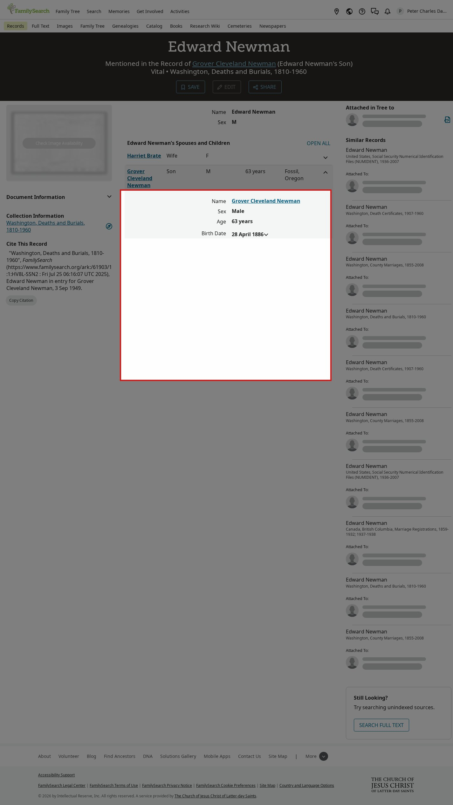

Grover Cleveland Newman 1886–1949
Peter's great-great-uncle by adoption.
Also recorded as G C Newman (1900 census); Grover C. Newman.
Grover Cleveland Newman was born between 28 Apr 1886 and 28 Apr 1887 in Gilliam County, Oregon, United States1, the son of Edward Newman and Harriet M Brate10,11. He died on 30 Aug 1949 in Washington, United States8 and was buried at Washington, United States9.
Family
- Parents
- Edward Newman 1844–1909 and Harriet M Brate 1847–1924 documented
Life events
| Event | Date | Place and details |
|---|---|---|
| Born | bet 28 Apr 1886 and 28 Apr 1887 | Gilliam County, Oregon, United States1 |
| Lived | bet 28 Apr 1886 and Aug 1892 | Gilliam County, Oregon, United States2 |
| Lived | 1900 | Washington, United States3 |
| Married | 29 Oct 1918 | Washington, United States7 |
| Lived | Sep 1937 | United States4 |
| Lived | 30 Aug 1949 | Washington, United States5 |
| Work | 30 Aug 1949 | Washington, United States Carpenter in Tonasket, Okanogan County, Washington (recorded as Occupation = 'Carpenter' on his 30 August 1949 Washington death and burial record, cn 16013).6 |
| Died | 30 Aug 1949 | Washington, United States8 |
| Buried | 3 Sep 1949 | Washington, United States9 |
Records



Sources
- NUMIDENT and 1949 Washington death record of Grover Cleveland Newman, 1901 BC marriage of Lilly E. Newman, and 1892 elopement from Fossil, NUMIDENT:539101528; DigitalFilmNbr DI0001099.
"value" : "\"United States, Social Security Numerical Identification Files (NUMIDENT), 1936-2007\", <i>FamilySearch</i> (https://www.familysearch.org/ark:/61903/1:1:6KW1-MWLZ : Fri Jul 03 20:52:03 UTC 2026), Entry for Grover Cleveland Newman and Edward Newman." … "original" : "28 Apr 1887" … "original" : "Fossil Wheel*, Oregon, United States" … "fullText" : "Grover Cleveland Newman"
Born 28 April 1886 or 28 April 1887 in Fossil, Gilliam (later Wheeler) County, Oregon to Edward Newman and Harriet M. Brate: his September 1937 Social Security NUMIDENT application (6KW1-MWL6, SSN 539-10-1528) gives '28 Apr 1887' at 'Fossil Wheel*, Oregon, United States' (Wheeler County was created from Gilliam, Grant, and Crook counties on 17 February 1899 with Fossil as county seat), whereas the 1900 US census (MMPL-98T) gives 'Apr 1886' in 'Oregon' (age 14y) and his 1949 Washington death record (HV8L-SSN2, cn 16013) gives '28 Apr 1886' at 'Fossil, Oregon' (age 63).
- NUMIDENT and 1949 Washington death record of Grover Cleveland Newman, 1901 BC marriage of Lilly E. Newman, and 1892 elopement from Fossil, NUMIDENT:539101528; DigitalFilmNbr DI0001099.
"original" : "28 Apr 1887" … "original" : "Fossil Wheel*, Oregon, United States" … "fullText" : "Grover Cleveland Newman" … "fullText" : "Edward Newman" … "fullText" : "Hattie M Brate"
Born in Fossil, Gilliam County, Oregon on 28 April 1886/1887 and lived there in early childhood with his parents Edward and Harriet Newman at least through his older sister Carrie May Newman's 16 August 1892 elopement from Fossil (L51K-5YQ).
- Household of Edward Newman, Toroda Creek, Okanogan, Washington, NARA T623, film 1241747, DGS 004118876, sheet 2A, household 49.
169 | 172 | Newman, Edward | Head | W | M | July 1838 | 61 | M | 31 | | | England | England | England | 1865 | 35 | Na | Farmer | 0 | | Yes | Yes | Yes | O | F | F | 136 | —, H M | Wife | W | F | Feb 1848 | 52 | M | 31 | 5 | 5 | New York | New York | New York | | | | | | | Yes | Yes | Yes | —, E | Son | W | M | Sept 1875 | 24 | S | | | | New York | England | New York | | | | Farm laborer | 0 | | Yes | Yes | Yes | —, W | Son | W | M | Mar 1882 | 18 | S | | | | California | England | New York | | | | Farm laborer | 0 | | Yes | Yes | Yes | —, L E | Daughter | W | F | Jan 1884 | 16 | S | | | | Oregon | England | New York | | | | | | | Yes | Yes | Yes | —, G C | Son | W | M | Apr 1886 | 14 | S | | | | Oregon | England | New York | | | | At school | | 6 | Yes | Yes | Yes
1900 US census, Toroda Creek, Okanogan County, Washington (Sheet 2A, Household 49): G C Newman, son, single, white, age 14y, born Apr 1886 in Oregon (father born England, mother born New York), in the household of his parents Edward Newman (50y) and Hattie Newman (40y) with siblings Edward Newman (26y), L A Newman (16y), and William Newman (18y).
- NUMIDENT and 1949 Washington death record of Grover Cleveland Newman, 1901 BC marriage of Lilly E. Newman, and 1892 elopement from Fossil, NUMIDENT:539101528; DigitalFilmNbr DI0001099.
"value" : "\"United States, Social Security Numerical Identification Files (NUMIDENT), 1936-2007\", <i>FamilySearch</i> (https://www.familysearch.org/ark:/61903/1:1:6KW1-MWLZ : Fri Jul 03 20:52:03 UTC 2026), Entry for Grover Cleveland Newman and Edward Newman." … "text" : "NUMIDENT:539101528" … "original" : "United States" … "original" : "Sep 1937" … "fullText" : "Grover Cleveland Newman"
Applied for a Social Security number (NUMIDENT application, SSN 539-10-1528, Washington State prefix 539) in September 1937 as Grover Cleveland Newman, born 28 April 1887 in 'Fossil Wheel*, Oregon, United States', son of Edward Newman and Hattie M Brate.
- Entry for Grover Cleveland Newman, died 30 Aug 1949, Tonasket, Okanogan, Washington, cn 16013; FilmNbr 230341; DigitalFilmNbr 007607750; RecordNbr 61.
"original" : "30 Aug 1949" … "original" : "Tonasket, Okanogan, Washington" … "original" : "Tonasket, Okanogan, Wash." … "fullText" : "Grover Cleveland Newman"
Resided in Tonasket, Okanogan County, Washington ('Tonasket, Okanogan, Wash.') at the time of his death there on 30 August 1949.
- Entry for Grover Cleveland Newman, died 30 Aug 1949, Tonasket, Okanogan, Washington, cn 16013; FilmNbr 230341; DigitalFilmNbr 007607750; RecordNbr 61.
"original" : "30 Aug 1949" … "original" : "Tonasket, Okanogan, Washington" … "original" : "Tonasket, Okanogan, Wash." … "value" : "Widowed" … "value" : "Carpenter" … "fullText" : "Grover Cleveland Newman"
Carpenter in Tonasket, Okanogan County, Washington (recorded as Occupation = 'Carpenter' on his 30 August 1949 Washington death and burial record, cn 16013).
- Marriage of Grover Cleveland Newman and Frances Chesramen Butler, 29 Oct 1918, Chelan, Washington, DigitalFilmNbr 004926448; ImageNbr 237; RecordId 004926448_00237.
"value" : "\"Washington, County Marriages, 1855-2008\", <i>FamilySearch</i> (https://www.familysearch.org/ark:/61903/1:1:QPMP-Q2RG : Mon Mar 11 00:15:06 UTC 2024), Entry for Grover Cleveland Newman and Frances Chesramen Butler, 29 October 1918." … "original" : "1884" … "text" : "34" … "fullText" : "Grover Cleveland Newman" … "original" : "1899" … "text" : "19" … "fullText" : "Frances Chesramen Butler" … "fullText" : "Edward Newman" … "fullText" : "Hattie" … "fullText" : "James Butler" … "fullText" : "Sarah Chesrarem" … "original" : "29 October 1918" … "original" : "Chelan, Washington, United States"
Married Frances Chesramen Butler (age 19, born c. 1899, daughter of James Butler and Sarah Chesrarem) on 29 October 1918 in Chelan, Washington; groom recorded as Grover Cleveland Newman, age 34 (born c. 1884), son of Edward Newman and Hattie.
- Entry for Grover Cleveland Newman, died 30 Aug 1949, Tonasket, Okanogan, Washington, cn 16013; FilmNbr 230341; DigitalFilmNbr 007607750; RecordNbr 61.
"value" : "\"Washington, Deaths and Burials, 1810-1960\", <i>FamilySearch</i> (https://www.familysearch.org/ark:/61903/1:1:HV8L-SS6Z : Fri Jul 25 06:16:07 UTC 2025), Entry for Grover Cleveland Newman and Edward Newman, 3 Sep 1949." … "original" : "28 Apr 1886" … "original" : "Fossil, Oregon" … "original" : "30 Aug 1949" … "original" : "Tonasket, Okanogan, Washington" … "value" : "Widowed" … "value" : "Carpenter" … "text" : "63" … "fullText" : "Grover Cleveland Newman" … "fullText" : "Edward Newman" … "fullText" : "Harriet Brate"
Died 30 August 1949 in Tonasket, Okanogan County, Washington (certificate no. 16013), age 63, widowed, carpenter, born 28 April 1886 in Fossil, Oregon, son of Edward Newman and Harriet Brate.
- Entry for Grover Cleveland Newman, died 30 Aug 1949, Tonasket, Okanogan, Washington, cn 16013; FilmNbr 230341; DigitalFilmNbr 007607750; RecordNbr 61.
"value" : "\"Washington, Deaths and Burials, 1810-1960\", <i>FamilySearch</i> (https://www.familysearch.org/ark:/61903/1:1:HV8L-SS6Z : Fri Jul 25 06:16:07 UTC 2025), Entry for Grover Cleveland Newman and Edward Newman, 3 Sep 1949." … "original" : "3 Sep 1949" … "original" : "Tonasket, Okanogan, Washington, United States" … "fullText" : "Grover Cleveland Newman"
Buried 3 September 1949 at Tonasket, Okanogan County, Washington.
- NUMIDENT and 1949 Washington death record of Grover Cleveland Newman, 1901 BC marriage of Lilly E. Newman, and 1892 elopement from Fossil, NUMIDENT:539101528; DigitalFilmNbr DI0001099.
"value" : "\"United States, Social Security Numerical Identification Files (NUMIDENT), 1936-2007\", <i>FamilySearch</i> (https://www.familysearch.org/ark:/61903/1:1:6KW1-MWLZ : Fri Jul 03 20:52:03 UTC 2026), Entry for Grover Cleveland Newman and Edward Newman." … "text" : "NUMIDENT:539101528" … "original" : "Sep 1937" … "original" : "28 Apr 1887" … "original" : "Fossil Wheel*, Oregon, United States" … "fullText" : "Grover Cleveland Newman" … "fullText" : "Edward Newman" … "fullText" : "Hattie M Brate"
Son of Edward Newman and Harriet M. Brate (recorded as father 'Edward Newman' and mother 'Hattie M Brate' on his September 1937 Social Security NUMIDENT application, SSN 539-10-1528).
- Entry for Grover Cleveland Newman, died 30 Aug 1949, Tonasket, Okanogan, Washington, cn 16013; FilmNbr 230341; DigitalFilmNbr 007607750; RecordNbr 61.
"value" : "\"Washington, Deaths and Burials, 1810-1960\", <i>FamilySearch</i> (https://www.familysearch.org/ark:/61903/1:1:HV8L-SS6Z : Fri Jul 25 06:16:07 UTC 2025), Entry for Grover Cleveland Newman and Edward Newman, 3 Sep 1949." … "original" : "28 Apr 1886" … "original" : "Fossil, Oregon" … "original" : "30 Aug 1949" … "original" : "Tonasket, Okanogan, Washington" … "fullText" : "Grover Cleveland Newman" … "fullText" : "Edward Newman" … "fullText" : "Harriet Brate"
Son of Edward Newman and Harriet M. Brate (recorded as 'Edward Newman' and 'Harriet Brate' on his 30 August 1949 Washington death and burial record, cn 16013, and as 'Edward Newman' and 'Hattie' on his 29 October 1918 Chelan County marriage record).